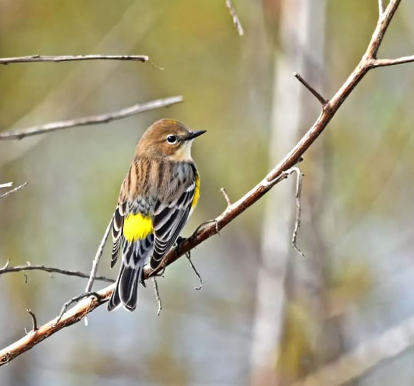
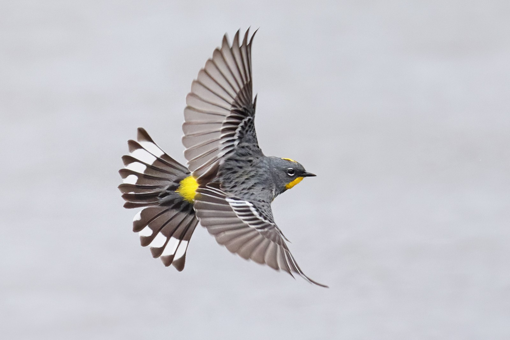
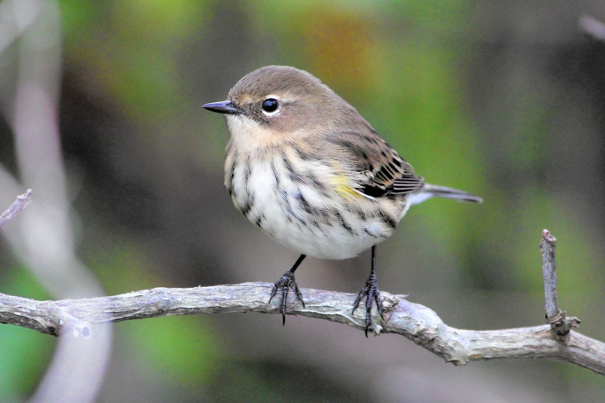

|
Butterbutts: Seen in East Lyme, CT in mid-March. Also called yellow-rumped warbler . Not sure exactly which species we're getting here, looks like it could be one of at least three, as described here . The Yellow Rumped Warbler is affectionately known as "Butter Butt." These birds are one of the most widely known and recognized in North America by the trademark lemon-colored rump patch as it flies away. At least, that's what it says here . |
|
|  | |
|  |  |